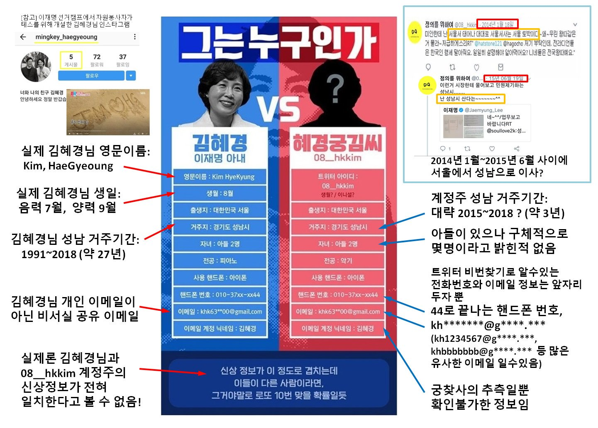

정의를 위하여 계정 | 혐의없음
전해철 비방 계정이 이재명 부인이라는 주장, 확인 가능 증거 없음.
전해철 비방, 문재인 비방 등의 악성 글을 작성한 트위터 계정을 혜경궁김씨라는 이름으로 포장하여 이재명 부인꺼라고 네거티브에 이용된 사례. 확인 가능한 증거가 없으며, 허위 주장도 포함 된 것으로 확인되었답니다.
2018년 ‘정의를 위하여(@08__hkkim)‘라는 트위터 계정이 전해철 의원과 문재인 대통령을 비방했는데 이 계정이 이재명 부인의 것이라는 루머로 인하여 악의적 논란이 된 사건이예요.
당시 해당 정보를 조작하여 퍼트리는 악의적인 유저들이 있었는데 이로 인해 오해가 많았답니다.
여러 의심 중 악의적 편집 된 건은 해당 계정의 비밀번호 찾기 정보 일부 글자가 이재명 부인 김혜경의 계정정보와 매치된다는 이유였지요.

위의 이미지를 만들어 악의적으로 퍼트렸는데 해당 정보는 대부분 조작된 정보로 확인되었으나 이를 모르는 많은 분들과 여론까지 가짜뉴스를 퍼트리는 바람에 경찰서까지 불려다녔지요.
경찰이 기소사유로 전했는데 너무 허무맹랑 한지라 혐의없음으로 끝났답니다.